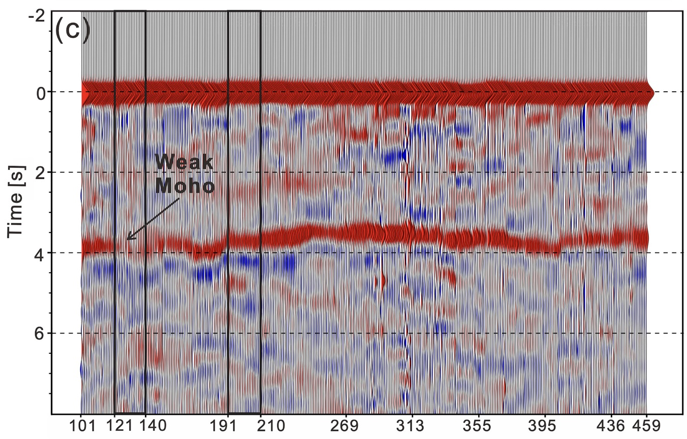

PARSIMONS:Passive And Reliable Seismic Imaging and Monitoring Of the Near Surface
近地表结构被动源地震成像及监测
特色:被动源、经济、可靠、环保
Parsimony

PARSIMONS:Passive And Reliable Seismic Imaging and Monitoring Of the Near Surface近地表结构被动源地震成像及监测特色:被动源、经济、可靠、环保 Parsimony
|
|
| 主页 |
成员 |
研究方向 |
成果介绍 |
野外活动 |
联系我们 |
简介
近地表（<10公里）是地球大气圈、水圈、生物圈及固体地球相互作用 |
最新研究研究组利用密集台阵接收函数成像方法获得南岭成矿带高精度莫霍面及壳内间断面结构模型。结果显示该区域郴州-临武断裂周围莫霍面转换波振幅较小，对应着莫霍面转换厚度较大，可能与地幔物质侵入促进钨锡矿成矿有关。相关结果发表在Geophysical Research Letters上。  南岭成矿带线状台阵接收函数 |